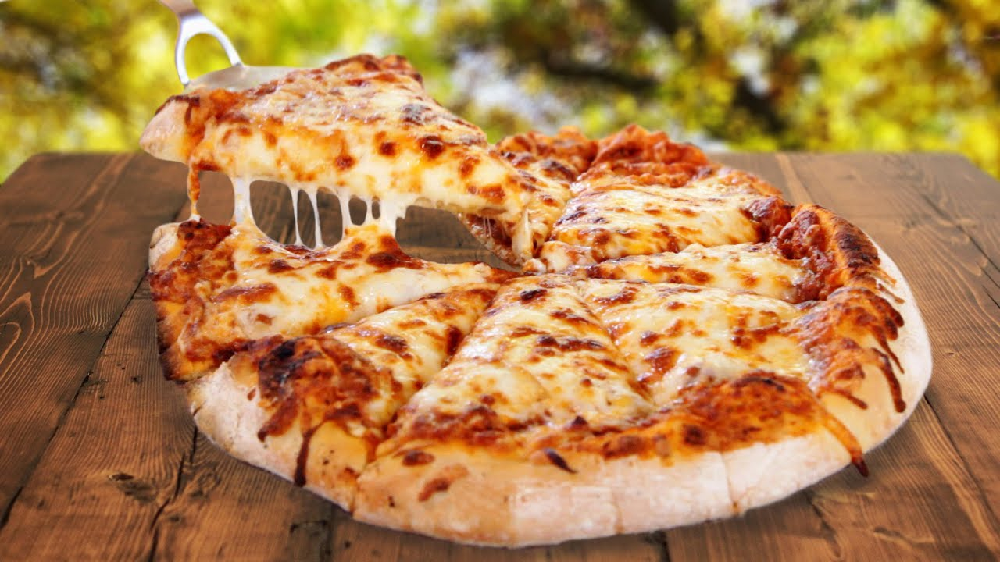

Pizza

This homemade pizza is a tasty and flexible meal made with a crispy base, rich tomato sauce, and your favorite toppings. Whether you like it meaty or full of veggies, this recipe can match your style.
It’s simple to make at home and perfect for sharing with friends or family. The melted cheese, golden crust, and flavorful sauce make it a favorite for any pizza lover.
Ingredians
- Pizza dough (store-bought or homemade)
- Tomato sauce (or pizza sauce)
- Mozzarella cheese (shredded)
- Olive oil
- Salt
- Dried oregano or Italian seasoning
- Garlic (optional)
- Toppings (your choice – pepperoni, onions, bell peppers, mushrooms, olives, etc.)
- Fresh basil (optional, for garnish)
Steps
- Preheat the oven to 220°C (425°F)
- Roll out the pizza dough on a floured surface.
- Spread tomato sauce evenly over the dough.
- Add shredded mozzarella cheese on top.
- Place your favorite toppings.
- Drizzle a little olive oil and sprinkle some seasoning.
- Bake in the oven for 12–15 minutes until the crust is golden.
- Let it cool slightly, slice, and enjoy!
Home